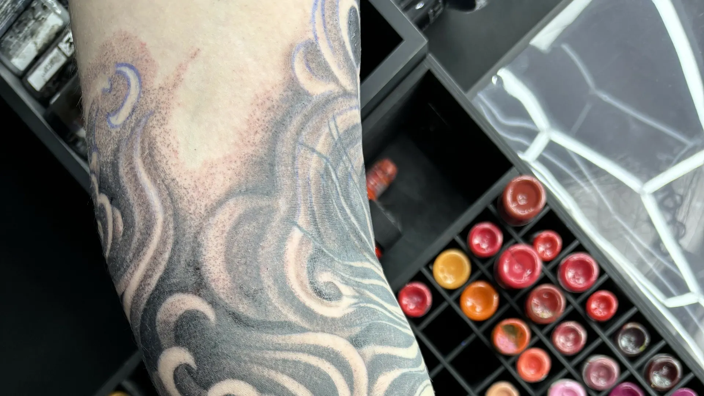
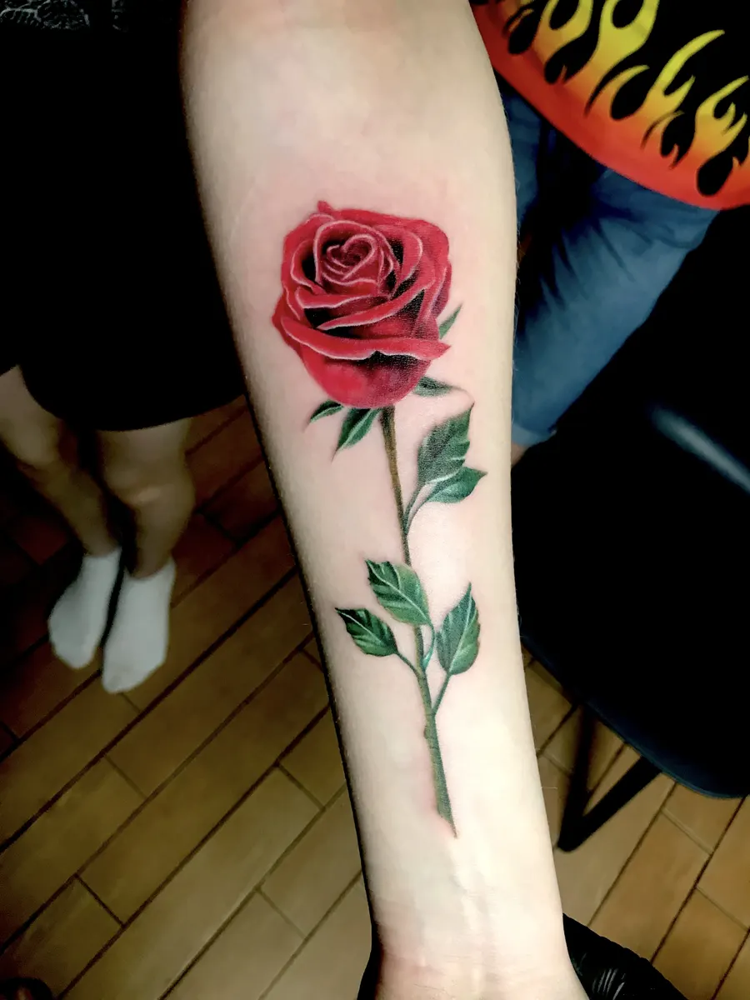
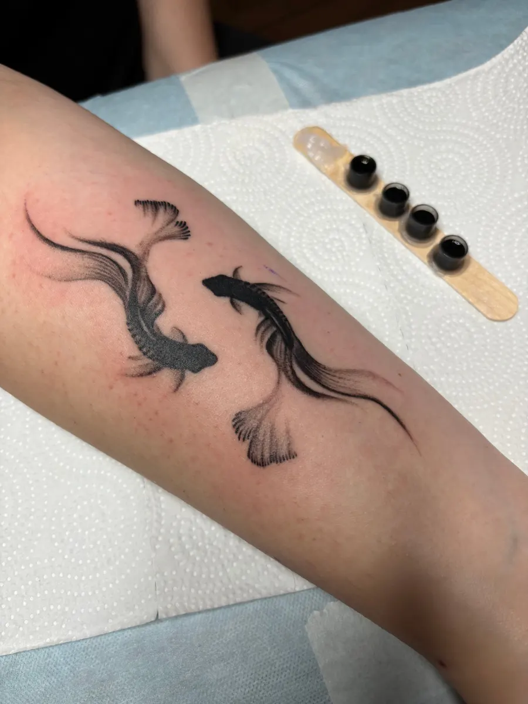
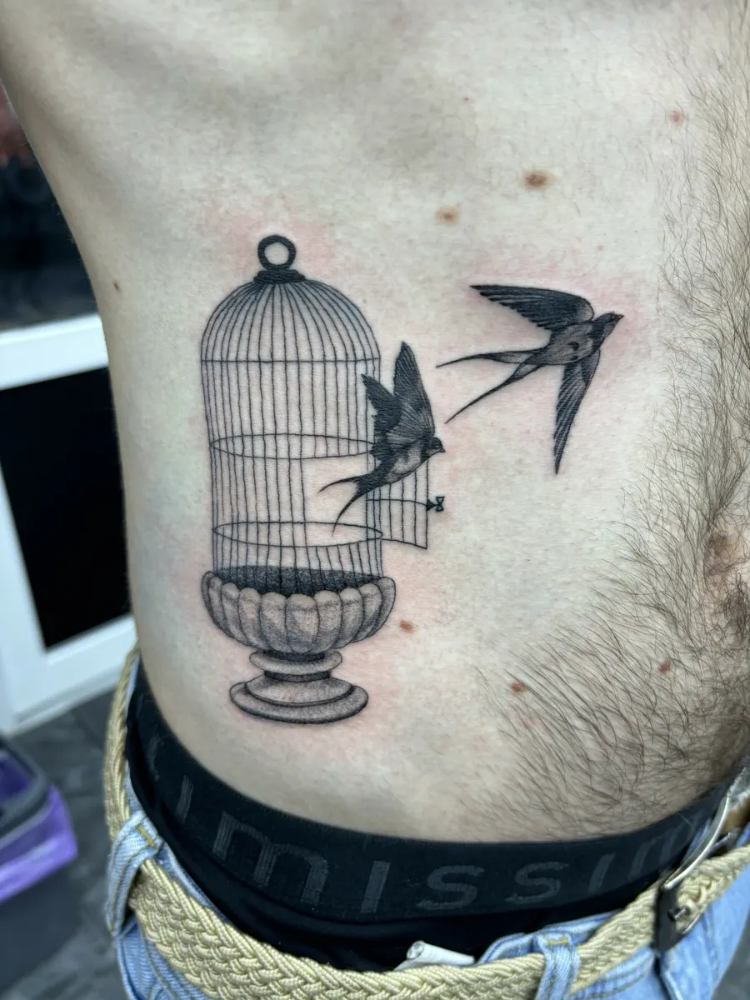

Тату · перекрытия · Городок Б
Тату в Люберцах – первая татуировка без страха и перекрытия старых
Мастер Егор дорабатывает эскиз, подгоняет размер и спокойно проводит даже первый сеанс. 3-е Почтовое Отделение, 98.
- 5,0 на Яндекс.Картах – 38 отзывов
- Ежедневно с 11:00 до 21:00
- Первая тату – от 3 000 ₽

Цены
Цены и услуги с карточки студии на Яндекс.Картах.
Тату
- Первая татунебольшая, 2 смот 3 000 ₽
- Для любителей татуировкиот 5 000 ₽
- Для опытных ценителейот 8 000 ₽
- Исправление «ошибок молодости»перекрытие старых татуот 6 000 ₽
Цены с карточки студии на Яндекс.Картах (обновлены 5 сентября).
Как записаться
- 01
Выбираете услугу, день и время
Прямо на сайте, в форме записи наверху страницы.
- 02
Сообщение уходит мастеру в WhatsApp или Telegram
Текст уже набран – приложите фото идеи или места на теле.
- 03
Мастер подтверждает сеанс
Обсудите эскиз, размер и стоимость до прихода.
- 04
Приходите на сеанс
Микрорайон Городок Б, улица 3-е Почтовое Отделение, 98, этаж 2.



За что выбирают – по отзывам
Первая тату – спокойно
«Впервые делал татуировку, записался к мастеру Егору. Все прошло отлично».
Эскиз доводим вместе
Отредактировать эскиз и подогнать размер – часть работы мастера.
Перекрытия
Исправить старую татуировку – отдельная услуга с понятной ценой.
Быстро и с юмором
Так пишут клиенты, которые пришли к Егору впервые.
Отзывы с Яндекс.Карт
«Был на сеансе у мастера Егора, все понравилось, мастер в общении приятный, сделал все быстро и качественно, по мелочам в эскизе смотрели по месту как лучше поступить, получилось отлично на мой взгляд, смело могу рекомендовать»
Blandfol · 4 июля
«Всем советую мастера Егора, очень позитивный человек. Хорошо знает своё дело, перед сеансом дал совет как лучше будет в итоге получилась бомба) Теперь буду у него частым гостем и друзьям посоветую. Так что если надумаете бить тату то точно именно к нему. Не об одной минуте сеанса не пожалел)И вам советую 😎»
Инкогнито 1962 · 28 июня
«Огромная благодарность мастеру Егору! Впервые пошла делать тату, и не зря доверилась именно ему. Быстро подогнали размеры под эскиз, подобрали место, сама процедура прошла максимально спокойно и в веселой обстановке. Результат просто бомбический, линии очень четкие и красивые, всем советую идти именно к этому мастеру!»
Dary Savost · 4 ноября
Отзывы с карточки на Яндекс.Картах, без правок.
Частые вопросы
Как узнать точную цену?
Цена зависит от размера, места и сложности. Пришлите фото идеи – мастер назовёт стоимость до сеанса.
Можно прийти со своей идеей?
Да – пришлите фото или описание и место на теле, мастер подскажет размер.
Сколько стоит первая татуировка?
Небольшая первая тату – от 3 000 ₽.
Напишите, когда удобно
- Адрес
- микрорайон Городок Б, улица 3-е Почтовое Отделение, 98, этаж 2, Люберцы
- Часы
- ежедневно 11:00–21:00
- Телефон
- +7 (926) 111-18-66